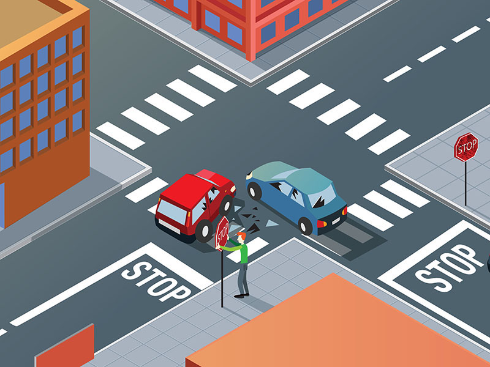

Divieti generali

E' vietato:
- rimuovere, spostare o imbrattare la segnaletica stradale (compresi segnali temporanei come coni o barriere)
- ciò che può comportare grave pericolo per gli altri utenti della strada
- gettare oggetti dal finestrino (in particolare i mozziconi di sigaretta sono molto pericolosi soprattutto se sopraggiungono veicoli a due ruote, o in prossimità di boschi o aree verdi dove potrebbero causare incendi)
- sporcare la strada (banchina compresa) depositando rifiuti o immettendosi sulla strada con le ruote sporche (fango, terriccio) o con il veicolo che perde olio o carburante. Nei casi di perdita di olio o carburante, il conducente deve compiere tutte le azioni necessarie per evitare pericoli per altri utenti e avvisare immediatamente l'ente proprietario della strada o gli organi di polizia. In tutti i casi in cui si sporca notevolmente la strada, si può incorrere in una sanzione amministrativa.
- gare di velocità (il conducente che partecipa a gare di velocità non autorizzate su aree pubbliche è punito con la reclusione. Vale la stessa cosa anche per chi scommette su tali gare)
- danneggiare opere e impianti stradali (recinzioni, panchine, tombini, ecc.)